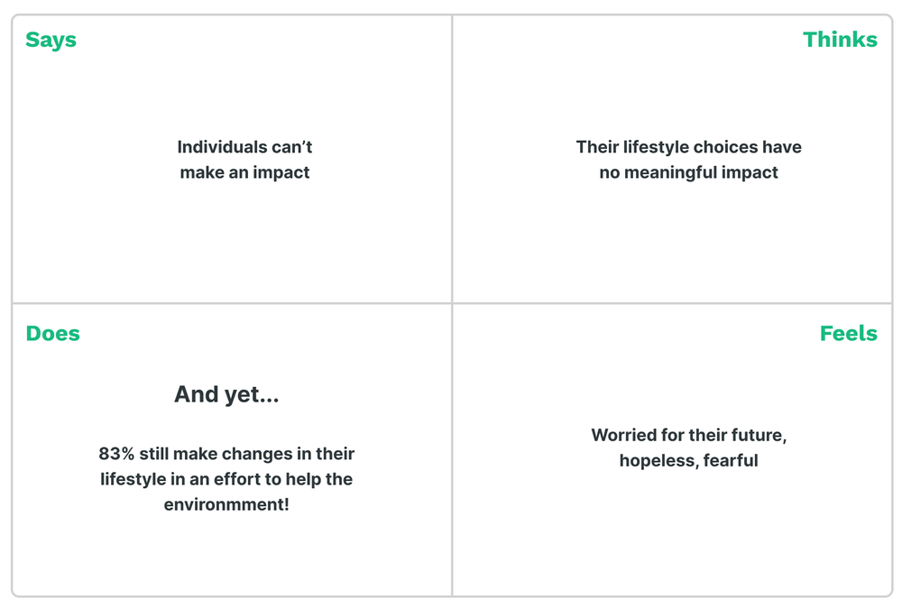
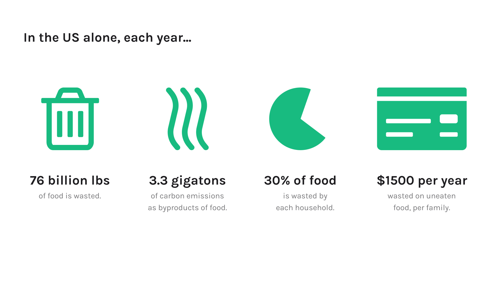
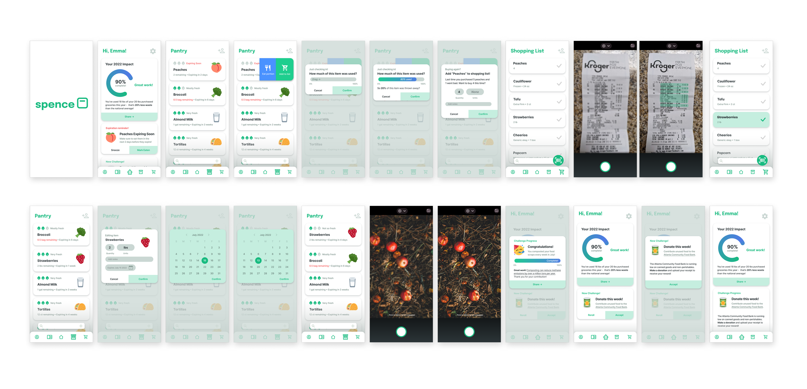

Preventing household food waste through a combined pantry tracker and shopping list.
Timeline —
Summer 2021
6 weeks
Team —
Solo class project
Skills —
User Research
Mobile Design
Branding
Figma
The Problem
People under 29 especially report growing concern about the climate, and a high level of willingness to change their lifestyle to reduce their own impact, but also feel increasingly doubtful that their actions have any meaningful impact. However, half of all food waste happens at home - making it one of the few areas where individual actions truly have significant impact.
How might we empower indiviudals to prevent household food waste?
The Solution
By planning our shopping and tracking our food use.
Reduce overbuying through planned grocery trips, with adaptive suggestions to buy only what you can finish.
Calculate, track, and send reminders on food expiration.
Form the habit through quantified progress and social validation.
01 Understanding the User
Interested in sustainability myself, I interviewed my peers to explore their feelings, and recognized a pervasive trend of a feeling of insignificance. One interviewee said that “I think my small near insignificant choices can’t fix problems that are caused by large corporations’ ignorant decisions.”
Young adults in 2021 care about the environment, but feel helpless to make change.
To confirm the validity of this understanding, I surveyed 100+ college students on their feelings. I found that the majority of my participants did not believe that individuals can impact the environment with their own actions. And yet, 83% of those “No”s still reported making changes in their lifestyle in an effort to protect the environment. Even as they say they can’t make a difference, they try their best anyways.
Underlying the skepticism is a strong desire and willingness to make a difference with their personal choices.
02 Secondary Research
How can we empower individuals to make a meaningful environmental impact?
My users grew up painstakingly turning off the faucet while brushing their teeth, double-checking their lights were off each day, and speed-showering every night, with assurance from the world around them it would stop global warming. But now, they face a very different reality. When you save maybe a few gallons of water a year by minding the faucet, but the factory production of a single t-shirt uses 659 gallons of water, of course it feels like you aren’t making a difference. But in my research, I found something surprising:
When it comes to food waste, individuals can make a meaningful environmental impact.
03 Design Process
I began ideating features for a digital solution based on proven research of food waste prevention techniques.
Then, I selected my key strategies by aiming for the highest impact and lowest complexity to both implement and interact with.
03 Final Design


Check out the Interactive Prototype!
04 Learnings ✨
1. Test again (and again and again)
In later user testing, I realized that this product would struggle to help users with roommates and family members that aren’t using the app. I never solved the edge case issues of how to track these other food purchases and consumption, or how to prevent a simple slip of forgetting to mark off items in the app. In the future, I need to more thoroughly test systems in their actual context (here, a full week of eating and shopping), to better understand how I can prevent these issues.
2. "Delightful" design
I’ve heard this word used to describe UX so often - but I think my end-of-semester critique on this project is when I finally understood it. A peer gave me the feedback that each helpful expiration reminder would become another chore in the user’s mind - “Ugh, now I have to eat that peach!”. By incorporating alternatives at this stage (“Freeze them!”, “Make this easy peach jam!”, etc.), we could turn this moment of frustration into a new opportunity for joy. This realization really struck me, and I can’t wait to carry this lesson of delight over mundanity into my future design work.
Up next: Bits of Good / Oracle / Norfolk Southern / Keeb /Spence